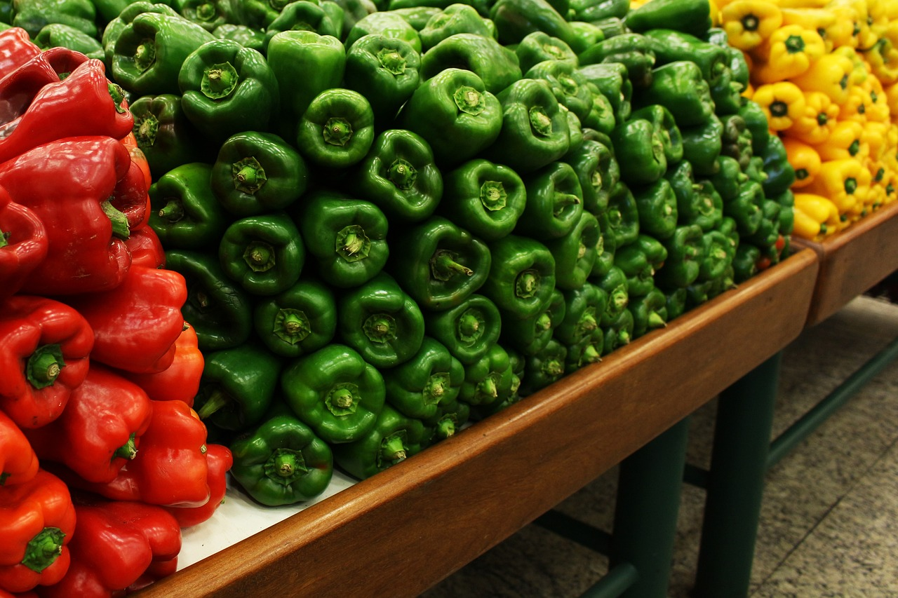

Morrón | ¿Cuál es la diferencia entre el rojo, verde y amarillo?
FOOD LOVERS, 26 May, 2021
El morrón, también conocido como pimiento o ajíes, es una hortaliza rica en fibra, antioxidantes y vitamina C, y es un alimento muy útil para una variedad de recetas. Existen tres colores de morrones, que representan también una diferencia más allá de su estética.
Son muy ricos y saludables, y se pueden comer tanto crudos en la ensalada como salteados en la sartén, en la parrilla o en rellenos en el horno. El precio de esta hortaliza es bastante alto y aunque el más consumido es el rojo, lo cierto es que todos los colores son útiles para la cocina y para la salud por sus propiedades.
Morrón rojo
El morrón rojo tiene 11 veces más betacarotenos que los morrones verdes, un compuesto que reduce la probabilidad de padecer cáncer y provee el 50% de la vitamina A.
Asimismo, está científicamente comprobado que esta vitamina mejora la calidad de los espermatozoides.
Por otro lado, el morrón rojo es una gran fuente de vitamina B6 y de magnesio, una combinación que ayuda a reducir la ansiedad y es un diurético natural, motivo por el cual reduce la inflamación y previene la hipertensión, indicó el sitio web Livestrong.
Morrón verde
El morrón verde es la versión del morrón sin madurar, por ello tienen un sabor amargo pueden llegar a provocar una indigestión si se consumen crudos, explicaron especialistas al Huffington Post. Tiene un alto contenido en vitamina C, tiene beneficios para la piel, reduce los resfriados, ayuda a combatir enfermedades como hipertiroidismo.
Este tipo de morrón es muy aconsejable para mujeres que están en la menopausia porque la vitamina C reduce los sofocos. Los verdes se recolectan antes y necesitan menos tiempo de maduración de cultivo, y un dato interesante es que es el más barato.
Morrón amarillo
El morrón que tiene mayor vitamina C es el amarillo, pero es el que menos vitamina A tiene y menos betacaroteno. Tienen sólo 20 calorías cada 100 gramos, es rico en fibra, genera saciedad y combate el estreñimiento. Tienen un alto contenido de agua y son más dulces.
Como una segunda edición del amarillo, se encuentra el naranja y son muy parecidos en relación al sabor y a la consistencia. Son más dulces que los verdes y menos que los rojos y amarillos. Tienen zeaxantina, que protege contra las cataratas y la degeneración macular.
Ahora que ya conocés las diferencias estás listo para elegir tus morrones favoritos y combinarlos en tus platos gourmet. ¡A disfrutar!
Volver